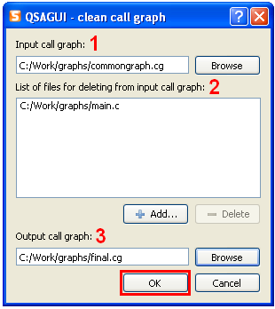

Contents
What is QSAGUI?
Getting started
Create call graph
Link call graphs
Clean call graph
Update call graph
Get funs/files lists
Show call graph
Settings
|
Clean call graph
Use "Call graph" -> "Clean..." or "Clean" button on tool bar or "Ctrl+Shift+C".

1. Select call graph for cleaning.
2. Add names of source files that were deleted to the list, use "Add..." and "Delete" buttons for items managing.
3. Select full name of output call graph.
Press the "OK" button to get clean call graph.
|